ЛАБОРАТОРНА РОБОТА №3
Тема: ВЕРСТКА HTML-ДОКУМЕНТУ. БЛОКОВА ВЕРСТКА. ВЕРСТКА
ЗАСОБАМИ CSS та FLEXBOX.
Мета:
-
придбати практичні навички роботи верстки сторінок засобами CSS, верстки на
основі плаваючих елементів, з’ясувати переваги та недоліки типів макетів веб-
сторінок;
-
придбати практичні навички роботи верстки сторінок засобами CSS та FLEXBOX.
ЗАВДАННЯ 1. МАКЕТ ВЛАСНОГО САЙТУ
Посилання на власний застосунок:
https://raulman.github.io/Glance/
Власний веб-застосунок виконується блоковою гумовою версткою . Ширина батьківського контейнеру <body> визначена
відсотком від ширини екрану браузера. Основні контейнери-нащадки також мають визначення ширини у відносному значенні стосовно
предка.
Однак, для сприймання структури та контенту сторінки при малих розмірах вікна браузера, значення ширини основних контейнерів
обмежені на мінімальному рівні.
Ширина деяких невеликих блоків задана абсолютною величиною в пікселах. На знімку нижче це ширина об'єктів класу ".header div".
Але ці об'єкти не впливають на загальну поведінку верстки сайту.
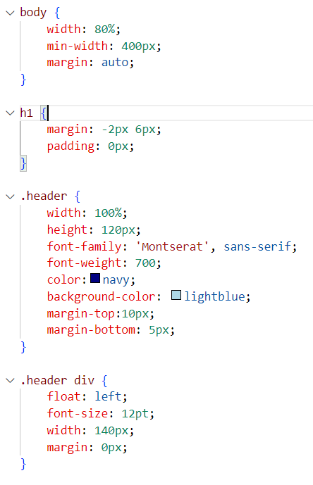
Верстка власного сайту заснована на базових понцепціях:
-
Для глобальних блоків - плаваючі елементи. Блоки слідують один за одним у визначеному порядку зверху вниз.
Розташування наступного блоку ліворуч за попередній визначається властивістю "float: left;"

-
Для дочірніх блоків (меню навігації, логотип та ін.) - плаваючі елементи та маніпулювання відступами.
Так, наприклад, збільшена відстань між кнопками меню навігації, а також підкоректована позиція логотипа в своєму
батьківському контейнері.

ГОЛОВНА СТОРІНКА САЙТУ
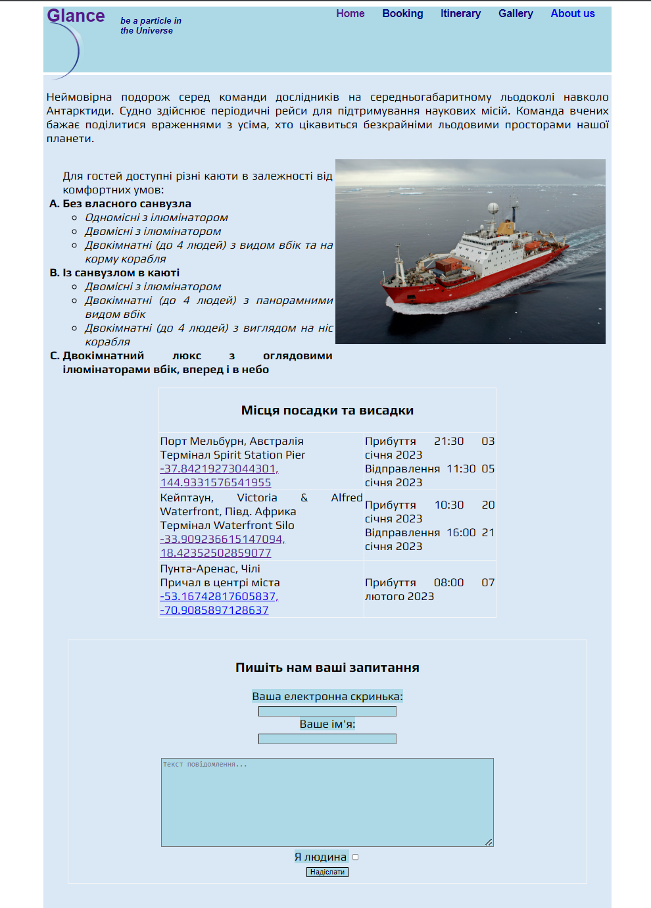
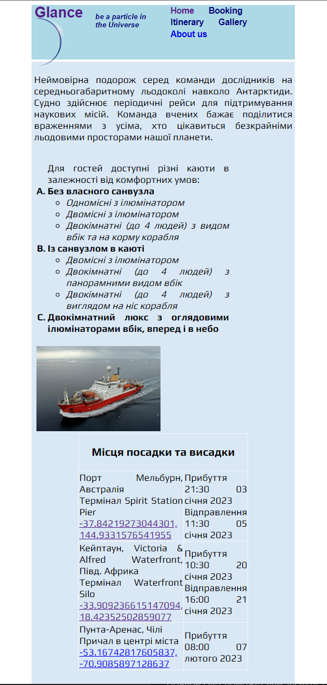
КОД HTML
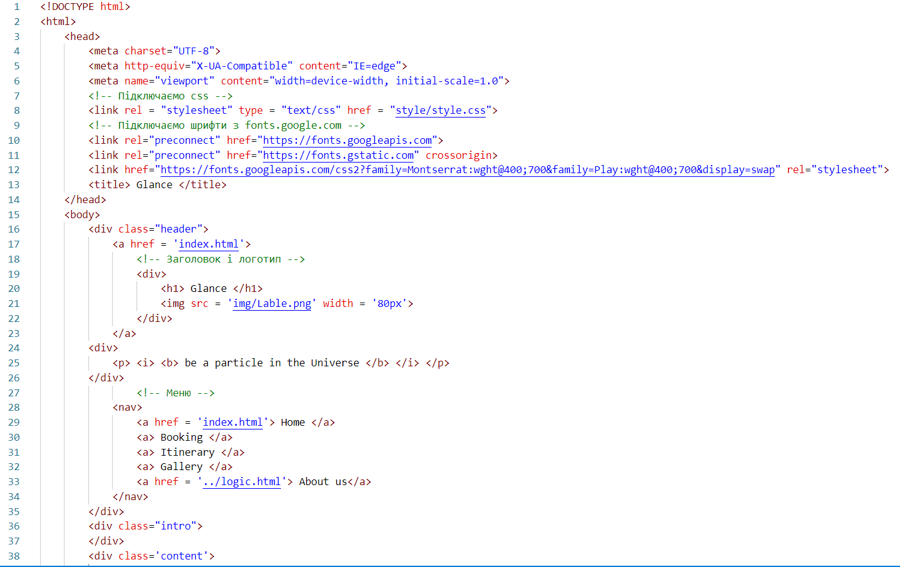
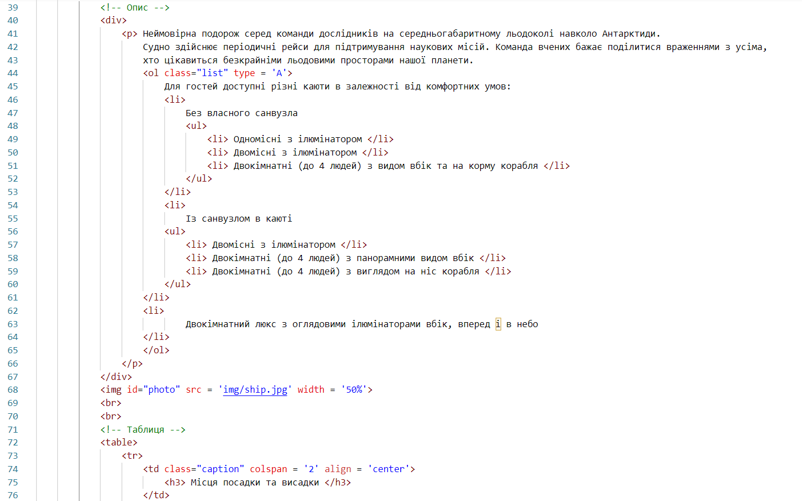
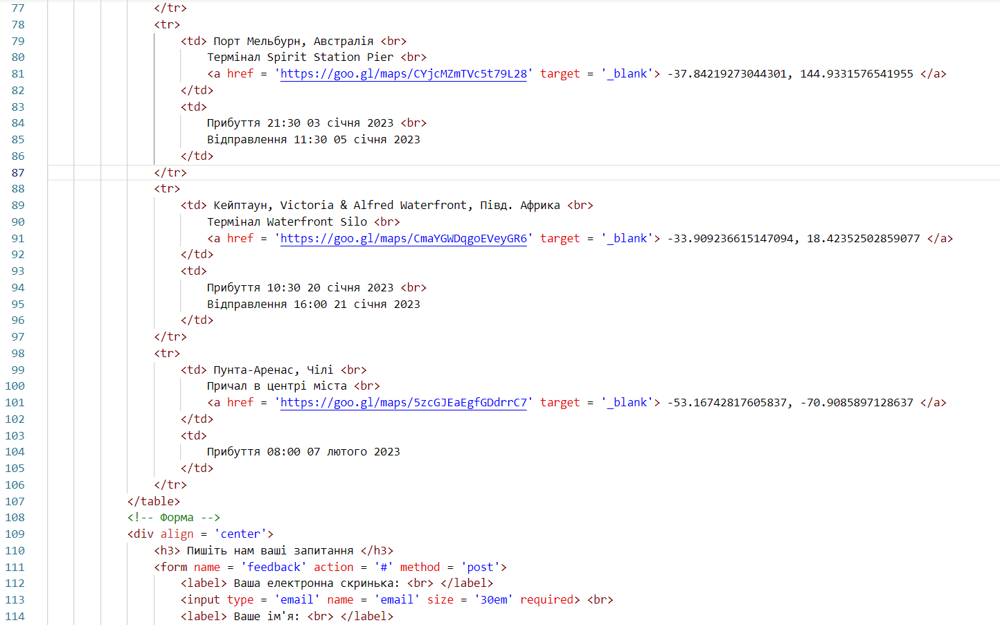
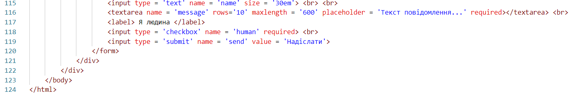
КОД CSS
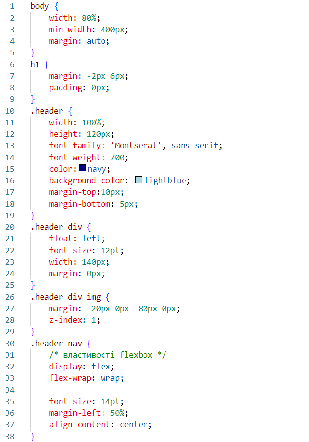
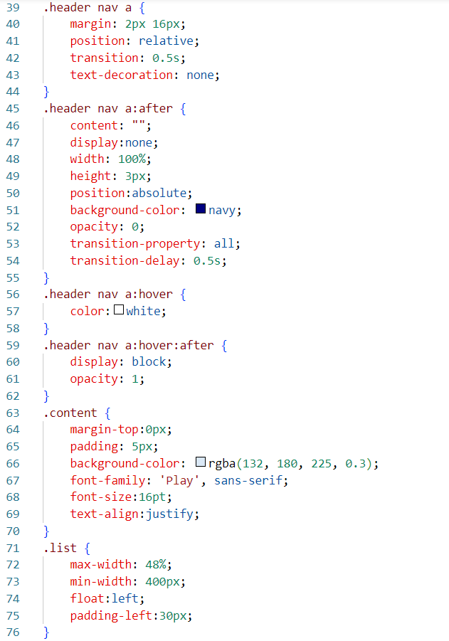
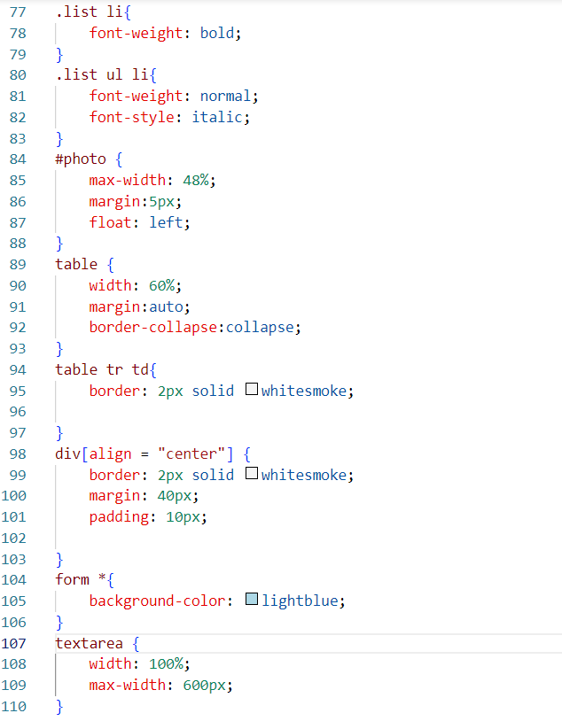
ЗАВДАННЯ 3. HTML-КОД
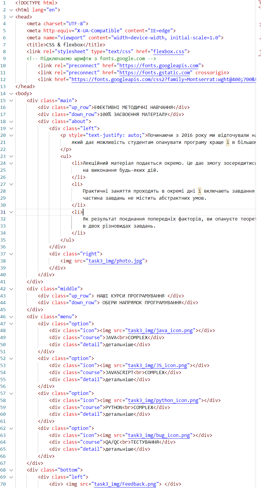
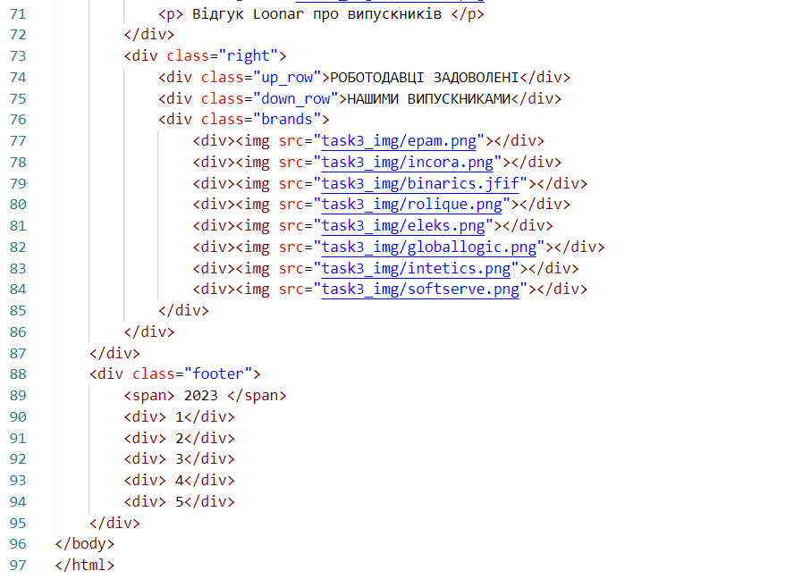
ЗАВДАННЯ 3. CSS-КОД
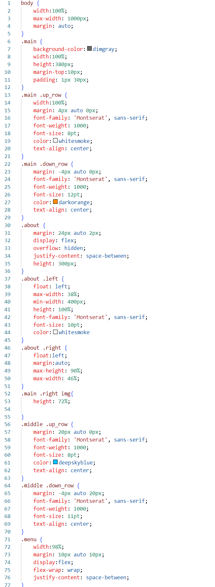
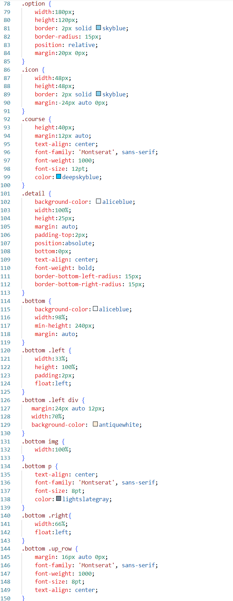
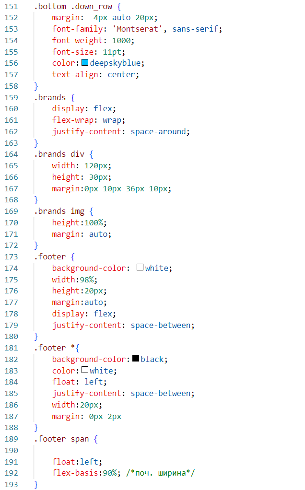